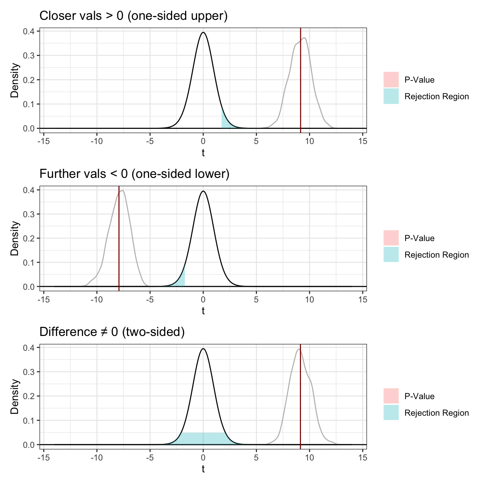

One-sample t test power calculation
n = 20.58039
d = 0.65
sig.level = 0.05
power = 0.8
alternative = two.sidedLab Thirteen – Statistical Inference
1 Remaining Portfolio Work!
By 5p 4/27 Email me a link to your GitHub page with all polished labs rendered, and your review material (at least one unit). In the email, you should include a reflection about the processes involved in creating this portfolio and what you learned as a result. If you’re having trouble reflecting, consider Fink’s Taxonomy of Significant Learning (Google Fink taxonomy aligned self-reflection questions). In the email, let me know whether you would be comfortable sharing your page – I’m hoping that together we can get a good study guide for the final.
2 Statistical Inference
Kasdin et al. (2025) show that dopamine in the brains of young zebra finches acts as a learning signal, increasing when they sing closer to their adult song and decreasing when they sing further away, effectively guiding their vocal development through trial-and-error. This suggests that complex natural behaviors, like learning to sing, are shaped by dopamine-driven reinforcement learning, similar to how artificial intelligence learns. You can find the paper at this link: https://www.nature.com/articles/s41586-025-08729-1.
Note that the measurement is rather complicated. First, the measurements are taken on syllables of a bird song. When discussing bird songs, the term syllable refers to a single, distinct, uninterrupted sound that is part of a possibly complex bird song.
They initially describe their measurement as follows. They compare the sound of the developing zebra finches to the median sound of adult zebra finches, that act as a “goal” sound. They contextualize that measurement by computing a “relative quality” that takes into account their current ability (e.g., are they getting closer or further compared to their previous 14 renditions). They define the “closer” measurements as the 10% of syllable renditions with the highest relative quality and the “further” as the lowest 10%.Note that the data are measures of dopamine change, they use fibre photometry, changes in the fluorescence indicate dopamine changes in realtime. Their specific measurement considers the percent change in flourescence in 100-ms windows between 200 and 300 ms from the start of singing, averaged across development.
Finally, the researchers note that they adjust the observations to correct for the increased dopamine for singing at all (whether it is close or far).So, the random variables we are working with are: \[\begin{align*} X_{\text{close}} &= \text{average \% change in fluorescence for the top 10\% syllable renditions} \\ &\quad \text{relative to distance from adult sound (corrected for singing)} \\[1ex] X_{\text{far}} &= \text{average \% change in fluorescence for the bottom 10\% syllable renditions} \\ &\quad \text{relative to distance from adult sound (corrected for singing)} \end{align*}\]
That is, the unit of measure is the syllable as measured on six birds, and the measurement is somewhat complicated.
2.1 Part a
Using the pwr package for (Champely 2020), conduct a power analysis. How many observations would the researchers need to detect a moderate-to-large effect (\(d=0.65\)) when using \(\alpha=0.05\) and default power (0.80) for a two-sided one sample \(t\) test.
Solution
The researchers would need to collect at least 21 observations to detect a moderate-to-large effect.
2.2 Part b
Click the link to go to the paper. Find the source data for Figure 2. Download the Excel file. Describe what you needed to do to collect the data for Figure 2(g). Note that you only need the closer_vals and further_vals. Ensure to mutate() the data to get a difference (e.g., closer_vals - further_vals).
Solution On nature.com I found firgure 2 which had a link to its source data. After downloading the excel file, I added a column name to each excel sheet respectively, the closer_vals and further_vals. I then downloaded each as csv files, and read them in to create a tibble of the values.
2.3 Part c
Summarize the data.
- Summarize the further data. Do the data suggest that dopamine in the brains of young zebra finches decreases when they sing further away?
- Summarize the closer data. Do the data suggest that dopamine in the brains of young zebra finches increases when they sing closer to their adult song?
- Summarize the paired differences. Do the data suggest that there is a difference between dopamine in the brains of young zebra finches when they sing further away compared to closer to their adult song?
- Optional Challenge Can you reproduce Figure 2(g)? Note that the you can use to plot the range created by adding the mean \(\pm\) one standard deviation.
Solution
Code
| variable | mean | sd | median | IQR | skew |
|---|---|---|---|---|---|
| closer_vals | 0.179 | 0.098 | 0.144 | 0.142 | 0.264 |
| difference | 0.391 | 0.214 | 0.353 | 0.305 | 0.666 |
| further_vals | -0.213 | 0.134 | -0.188 | 0.191 | -1.032 |
The mean of the further values is -.213, which being less than 0 suggests that dopamine in the brains of young zebra finches does decrease when they sing further away. Inversely, the mean of the closer values is .179, which being greater than 0, suggests that the dopamine in the brains of young zebra finches increases when they sing closer to their adult song. The difference between the two has a mean of .391, this is notably far from 0, meaning there is a difference in the dopamine of young zebra finches in the closer values compared to the further values.
2.4 Part d
Conduct the inferences they do in the paper. Make sure to report the results a little more comprehensively – that is your parenthetical should look something like: (\(t=23.99\), \(p<0.0001\); \(g=1.34\); 95% CI: 4.43, 4.60). Ensure to verify any conditions for use.
Note: Your numbers will vary slightly because they reported two-sided test \(p\)-values instead of the specified one-sided tests.
- “The close responses differed significantly from 0 (\(p=1.63 \times 10^{-8}\)).’’
Note: Use the appropriate one-sided test. - “The far responses differed significantly from 0 (\(p=5.17 \times 10^{-8}\)).’’
Note: Use the appropriate one-sided test. - “The difference between populations was significant (\(p=1.04 \times10^{-8}\)).’’
Note: Use the two-sided test.
Solution
Code
One Sample t-test
data: dat.vals$closer_vals
t = 9.1573, df = 24, p-value = 1.333e-09
alternative hypothesis: true mean is greater than 0
95 percent confidence interval:
0.1452511 Inf
sample estimates:
mean of x
0.1786241 Hedges' g | 95% CI
------------------------
1.77 | [1.14, 2.39]Code
One Sample t-test
data: dat.vals$further_vals
t = -7.9245, df = 24, p-value = 1.866e-08
alternative hypothesis: true mean is less than 0
95 percent confidence interval:
-Inf -0.1668619
sample estimates:
mean of x
-0.2128063 Hedges' g | 95% CI
--------------------------
-1.53 | [-2.10, -0.95]Code
One Sample t-test
data: dat.vals$difference
t = 9.1428, df = 24, p-value = 2.746e-09
alternative hypothesis: true mean is not equal to 0
95 percent confidence interval:
0.3030683 0.4797923
sample estimates:
mean of x
0.3914303 Hedges' g | 95% CI
------------------------
1.77 | [1.14, 2.39][1] 25Verification: Because there is 25 rows of data and the power analysis told us we only need 21, rounding up, observations, the t-test condition is met.
Closer vals: The close responses differed significantly from 0 (t=9.157, p=1.33e-09; g=1.77; 95% CI: 0.145, inf).
Further vals: The far responses differed significantly from 0 (t=−7.925, p=1.87e-08; g=−1.53g; 95% CI: -inf, −0.167).
Difference: The difference between populations was significant (t=9.143, p=2.75e-09; g=1.77g; 95% CI: 0.303, 0.480).
2.5 Part e
For each hypothesis test in the previous question, plot the null \(T\) distribution and the observed \(t\) statistic. Ensure to use to highlight the rejection region and the \(p\)-value. Additionally, add the resampling distribution for \(T\) to the chart to demonstrate any differences between the null distribution and the distribution suggested by the data.
Solution
Code
set.seed(7272)
n = nrow(dat.vals)
df = n - 1
alpha = 0.05
t_close = 9.157
t_far = -7.925
t_diff = 9.143
s_close = sd(dat.vals$closer_vals)
s_far = sd(dat.vals$further_vals)
s_diff = sd(dat.vals$difference)
# Resampling
ts_close = rep(NA, 1000)
for(i in 1:1000){
curr.sample = sample(dat.vals$closer_vals, size = n, replace = TRUE)
ts_close[i] = (mean(curr.sample) - 0) / (s_close / sqrt(n))
}
ts_far = rep(NA, 1000)
for(i in 1:1000){
curr.sample = sample(dat.vals$further_vals, size = n, replace = TRUE)
ts_far[i] = (mean(curr.sample) - 0) / (s_far / sqrt(n))
}
ts_diff = rep(NA, 1000)
for(i in 1:1000){
curr.sample = sample(dat.vals$difference, size = n, replace = TRUE)
ts_diff[i] = (mean(curr.sample) - 0) / (s_diff / sqrt(n))
}
ggdat1 = tibble(t = seq(-14, 14, length.out = 1000)) |>
mutate(pdf.h0 = dt(t, df = n - 1))
p1 = ggplot(ggdat1) +
geom_line(aes(x = t, y = pdf.h0)) +
stat_density(data = tibble(t = ts_close), aes(x = t), color = "grey", geom = "line") +
geom_hline(yintercept = 0) +
geom_ribbon(data = ggdat1 |> filter(t >= qt(1 - alpha, df)),
aes(x = t, ymin = 0, ymax = pdf.h0, fill = "Rejection Region"), alpha = 0.3) +
geom_ribbon(data = ggdat1 |> filter(t >= t_close),
aes(x = t, ymin = 0, ymax = pdf.h0, fill = "P-Value"), alpha = 0.3) +
geom_vline(xintercept = t_close, color = "darkred") +
theme_bw() +
labs(x = "t", y = "Density", title = "Closer vals > 0 (one-sided upper)", fill = "")
ggdat2 = tibble(t = seq(-14, 14, length.out = 1000)) |>
mutate(pdf.h0 = dt(t, df = n - 1))
p2 = ggplot(ggdat2) +
geom_line(aes(x = t, y = pdf.h0)) +
stat_density(data = tibble(t = ts_far), aes(x = t), color = "grey", geom = "line") +
geom_hline(yintercept = 0) +
geom_ribbon(data = ggdat2 |> filter(t <= qt(alpha, df)),
aes(x = t, ymin = 0, ymax = pdf.h0, fill = "Rejection Region"), alpha = 0.3) +
geom_ribbon(data = ggdat2 |> filter(t <= t_far),
aes(x = t, ymin = 0, ymax = pdf.h0, fill = "P-Value"), alpha = 0.3) +
geom_vline(xintercept = t_far, color = "darkred") +
theme_bw() +
labs(x = "t", y = "Density", title = "Further vals < 0 (one-sided lower)", fill = "")
ggdat3 = tibble(t = seq(-14, 14, length.out = 1000)) |>
mutate(pdf.h0 = dt(t, df = n - 1))
p3 = ggplot(ggdat3) +
geom_line(aes(x = t, y = pdf.h0)) +
stat_density(data = tibble(t = ts_diff), aes(x = t), color = "grey", geom = "line") +
geom_hline(yintercept = 0) +
geom_ribbon(data = ggdat3 |> filter(t >= qt(1 - alpha/2, df) | t <= qt(alpha/2, df)),
aes(x = t, ymin = 0, ymax = pdf.h0, fill = "Rejection Region"), alpha = 0.3) +
geom_ribbon(data = ggdat1 |> filter(t >= t_diff | t <= -t_diff),
aes(x = t, ymin = 0, ymax = pdf.h0, fill = "P-Value"), alpha = 0.3) +
geom_vline(xintercept = t_diff, color = "darkred") +
theme_bw() +
labs(x = "t", y = "Density", title = "Difference ≠ 0 (two-sided)", fill = "")
p1 / p2 / p3
References
Champely, Stephane. 2020. Pwr: Basic Functions for Power Analysis. https://CRAN.R-project.org/package=pwr.
Kasdin, Jonathan, Alison Duffy, Nathan Nadler, Arnav Raha, Adrienne L Fairhall, Kimberly L Stachenfeld, and Vikram Gadagkar. 2025. “Natural Behaviour Is Learned Through Dopamine-Mediated Reinforcement.” Nature, 1–8.